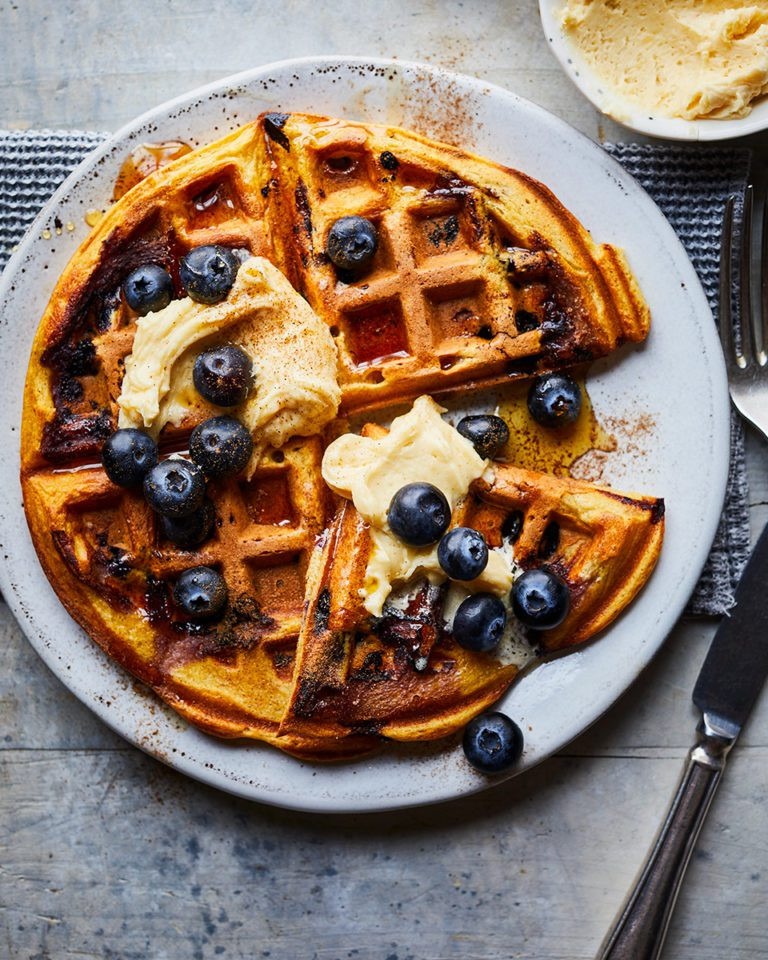

Blueberry waffles with maple butter

Here we bring you a classic breakfast of blueberry waffles with maple butter. You can’t beat these, cooked until golden, and sprinkled with cinnamon. Plus, if you don’t have a waffle iron, you can use a griddle pan and still come up trumps!
Or why not try our coconut and banana waffles for something a bit different?
Ingredients
- 175g plain flour
- ¼ tsp bicarb soda
- ½ tsp baking powder
- 1 tbsp icing sugar
- 1 tsp ground cinnamon, plus extra to serve
- 300ml buttermilk
- 50ml whole milk
- 50g unsalted butter, melted and cooled, plus extra to grease
- 2 medium free-range eggs, separated
- 300g blueberries
For the whipped maple butter
- 150g unsalted butter
- 4 tbsp maple syrup, plus extra to serve
You'll also need
- A waffle iron or ridged griddle pan
Method
- For the whipped butter, melt the butter in a small pan over a medium heat. Continue to cook, stirring regularly, until the butter turns brown and smells nutty. Pour into a bowl and add the maple syrup, then chill until the butter re-solidifies but is still soft (about 30 minutes). Beat the butter using an electric hand mixer until very pale and fluffy. Stir in a pinch of sea salt, then set aside at room temperature until ready to serve.
- Grease an 18cm waffle iron (see Know-how) and heat to high. Sift the flour, bicarb, baking powder, icing sugar and cinnamon together in a large bowl. In another bowl, whisk the buttermilk, milk, butter and egg yolks, then pour into the dry ingredients and mix until just combined.
- Whisk the egg whites to firm peaks using an electric hand mixer, then fold into the waffle batter, followed by half the blueberries. Ladle about ¼ of the batter into the middle of the waffle iron and cook for 6-8 minutes until crisp and golden. Keep the cooked waffles warm in a low oven while cooking the remaining batter.
- Serve the waffles warm, topped with the maple butter, remaining fresh blueberries, an extra drizzle of maple syrup and a sprinkling of cinnamon, if you like.
back to recipes